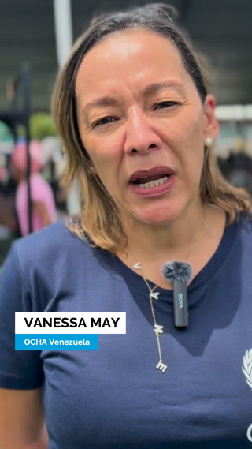
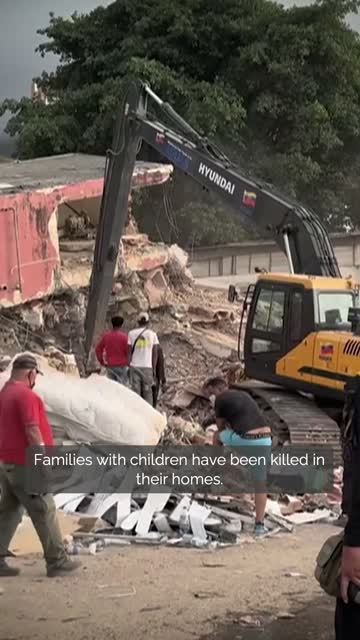
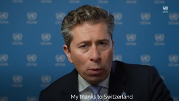

Edit a video — from UN Web TV or a file you already have — cut it, caption it, OCHA-brand it. Or just add lower thirds, subtitles and an ending to something you've already cut. Everything runs on your computer; your video never leaves it.
Set up QuickVid on this computer
QuickVid works on real video — cutting, transcribing, rendering — so it runs a small engine on your computer: free, sets itself up, no admin rights needed. Install once; this page unlocks by itself and stays up to date. Your videos never leave your machine.
First time on this Mac?
Double-click it in your Downloads (if it lands as a .zip, double-click that first to unzip it — one extra click). It sets everything up by itself (~10 minutes, no admin password) and starts QuickVid when it finishes — this page unlocks on its own.
Already installed?
Double-click it — if it lands as a .zip, double-click that first to unzip it. The engine starts quietly in the background and this page unlocks in seconds. It stays on until you shut down or log out. Keep the file (Downloads or Desktop) — the same one works every time, no re-download.
First time on this PC?
Double-click it in your Downloads. It sets everything up by itself (~10 minutes, no admin) — including Python if you don’t have it — and starts QuickVid when it finishes; this page unlocks on its own.
Your video
Pick the finished video you want to brand — the editing is already done; this mode only adds name strips and the OCHA ending.
- Click the box — a normal file picker opens. Any size, any format, kept full quality.
- Nothing is uploaded — QuickVid reads the file straight off your disk and it never leaves your computer.
Lower thirds
- A lower third is the animated strip that introduces a speaker: name on top, job title underneath.
- Start = when it appears, as minutes:seconds into the video (e.g.
0:53). Duration = how long it stays — 5–6 seconds reads comfortably. - Alignment: Centre is the OCHA social-media style; Left suits classic 16:9 videos.
- One row per person — Add lower third for more. Don't need any? Leave it empty.

Type the name and job title, when it appears (e.g. 0:53), how many seconds it stays, and left or centre. Add as many as you need.
Subtitles
- QuickVid listens to the video on your computer (nothing is uploaded), writes down the words, and burns them in as subtitles. Adds a few minutes to the render.
- Two looks: Social — white text on a grey box (feeds & reels) — or Event — clean white text over a soft dark gradient (16:9 screens). The preview shows each.
- Transcription runs on this computer's engine — a long video adds a few minutes to the render.

Bug
- An OCHA watermark in the top-right corner, on for the whole video — the mark broadcasters call a "bug".
- Typically for event videos (16:9 screens, screenings, livestreams) — social media rarely needs it. Available for any format if you want it.
- Off by default. Turn it on for clips likely to be re-shared or re-cut, so the OCHA source stays visible however it travels.

Ending
- Over footage — the OCHA logo snaps over your final shot, with the click sound. The standard for social clips; needs about 2 seconds of calm footage at the end.
- Over black — the same logo + click on a black end card, added after your last frame. Use it when the video ends abruptly.
- No ending — nothing added.
What are you making?
- A statement clip is a principal's remarks — a Security Council or member-states briefing, or a recorded video message — cut down to the key sentences (60–90 seconds), captioned and OCHA-branded.
- Project name: type a name (e.g. “ASG Ukraine Security council”), then Choose where to save — a folder with that name is created there. Everything lands inside — the original download in
source/, the finished clip and thumbnail inexport/, the script ininfo/— and your progress autosaves as a project file with the same name, so you can close QuickVid and pick the job up later. - Skip it and files go to a temporary spot instead; progress then autosaves only in this browser.
.ochaquickvid.json file to reload everything and keep editing.
The recording
- On webtv.un.org, open the meeting's own page — search its title (e.g. “Security Council … Ukraine”) — and paste that link.
- Works even while the meeting is still live — QuickVid downloads whatever has streamed so far, right up to that moment. No need to wait for it to finish or request the file separately.
- Just make sure it's that specific meeting's page, not the generic webtv.un.org homepage — the link should end in an ID, e.g.
webtv.un.org/en/asset/k1m/k1mx7fqwrz. - The download uses the floor sound — each speaker's real voice, not the interpreter.
- Already have the video? Pick a file and skip the download.
Paste the link of the meeting's own UN Web TV page (works even while it's still live) — or pick a video file you already have.
Check the lip-sync optional
- UN broadcast feeds often run the sound a few frames ahead of the picture; recorded video messages are usually already fine.
- Play the loop and watch the lips. In sync? Leave it on As is and continue. Slightly off? Try +4f — the usual fix for UN feeds — or its neighbours until the lips lock. Each chip re-renders the same moment with that correction.
- Try another moment tests a different part of the recording — useful when the current preview has no clear talking.
- Your choice is baked into a working copy; the original download stays untouched.
Broadcast feeds sometimes run the sound a few frames early — a recorded video message is usually already fine. Play the test; if the lips match, leave it on As is and continue. If they drift, try another offset until they lock.
Find the words
- Transcription is the slow part — narrowing it to just your speaker keeps it to a few minutes.
- Scrub the recording; when your speaker starts, click Set "From" here. Scrub to where they finish → Set "To" here. (Typing the times works too; the ▲▼ arrows nudge by 15 s.)
- Do they speak in two separate blocks — say an opening statement and a later reply? Add another range for the second block; all windows are transcribed and the sentences merge into one list.
- Leave the times empty to transcribe the whole recording (slow for a long meeting).
Scrub to find your speaker, then Set "From"/"To" for the block they speak in (or type the times). Speaks in more than one place? Add another range — each window is transcribed and the sentences merge into one list. Leave the times empty for the whole video.
Choose what they say
- Every sentence found in your window is listed with its length. Tick the ones that carry the message — the counter above the list keeps the running total. Aim for 60–90 seconds.
- Sentences that follow each other play as one continuous take — natural pauses kept, no cuts. Only when you skip ahead does QuickVid cut, hiding the jump with a punch-in (a framing change, broadcast style) and marking the captions with [...] so viewers see words were skipped.
- The C / G buttons force a Close-up or General shot for that sentence; leave them alone and the tool alternates sensibly on its own.
- Spotted a transcription typo? Click the text and fix it — that changes the captions only, never the audio.
- Use AI to pick the sentences: copies a ready-made prompt with the whole transcript. Paste it into Microsoft Copilot (or any AI chat), answer its questions (key messages, target length — attach the statement if you have it), then paste its answer back and the right sentences tick themselves. You still review and adjust.
Tick the sentences that carry the message — aim for 60–90 seconds. Consecutive sentences play as one take; jumping ahead becomes a clean punch-in cut with [...] in the captions. You can fix small transcription slips in the text (captions only).
Format & framing
- Pick the destination: Reels (9:16 portrait) for Instagram/TikTok, Square (1:1) or IG / FB feed (4:5) for feed posts, Event screen (16:9) for halls and webstreams — its captions are clean text over a soft gradient instead of boxes.
- Two crops of the same footage: General (the main look) and Close-up (the punch-in used at jumps). Each is its own little editor — drag the picture to reposition it, and use its zoom slider to go tighter or wider. What you see is exactly what renders.
- Some directions are locked by geometry — e.g. a portrait crop of a landscape video already uses the full height, so it only moves sideways until you zoom in. The grey note under each preview tells you.
- Zooming far softens the picture (the source has only so many pixels) — the note warns you near the limit.
- The previews show a frame from your first kept sentence; Try another frame jumps to a different moment if that one's a wide or in-between shot.
Drag each picture to reposition it, and use its zoom to go tighter or wider — the two frames are independent. The previews use a moment from your first kept sentence; Try another frame shows a different one.
Titles & ending
- A lower third introduces a speaker: name on top, job title under it. One row per person — Add lower third for more.
- Start = seconds into the finished clip; Duration = seconds on screen (5–6 reads well). 2nd line adds a second title line — e.g. a Spanish translation for a bilingual strip.
- Subtitles: the speaker's words, burned in — keep ON for social (most people watch muted). Two looks: Social (white on a grey box) or Event (clean white over a soft gradient, for 16:9 screens); the preview shows each, and the format you picked in step 6 sets the sensible default.
- Bug: an OCHA watermark, top-right, on for the whole clip — typically for event videos (social media rarely needs it). Off by default; available for any format.
- Ending: Over footage = the OCHA logo snaps over the closing shot with the click sound (the standard). Over black = clean black end card. No ending = finish on the last words.
- Footage after the last sentence: with Over footage, the picture keeps rolling for a moment under the logo while the sound fades to silence — whoever speaks next in the room is never heard. If your speaker closes with "I thank you", keep that sentence ticked so it's heard.
A lower third for each person on screen. Start = seconds into the finished clip; Duration = seconds it stays.
Subtitles
Bug
Ending
Preview & download
- Watch it start to finish — check the first caption, the lower-third timing, each cut, and the ending.
- Chose a job folder in step 1? The clip is already saved in its
export/folder (the exact path shows below the player). Download MP4 saves another copy via the browser. - Thumbnail: a clean still for the post cover — same size as the video, no branding. Click the frame you like, then Download thumbnail (it also lands in
export/). - Need a change? Scroll up, adjust any step, and hit Create the statement clip again.
Thumbnail
Three clean stills (no branding), same size as the video — click the one you like. None good? Show 3 more for different moments. Tip: pick a frame with the mouth closed.
Let AI pick the sentences
-
Copy the prompt — it contains the full transcript and instructions.
This transcript is long — some AI chats truncate big pastes. If the AI seems to miss sentences, narrow the transcription window in step 4 and try again.
- Paste it into Microsoft Copilot (or any AI chat) and press send. It will ask you a couple of questions — key messages to focus on and the target length. Answer them; attach the statement or key-messages document if you have one.
-
Copy the AI's final answer and paste it here:
You're sharing the transcript text with your AI tool — fine for public meetings; think twice for embargoed or unpublished content.